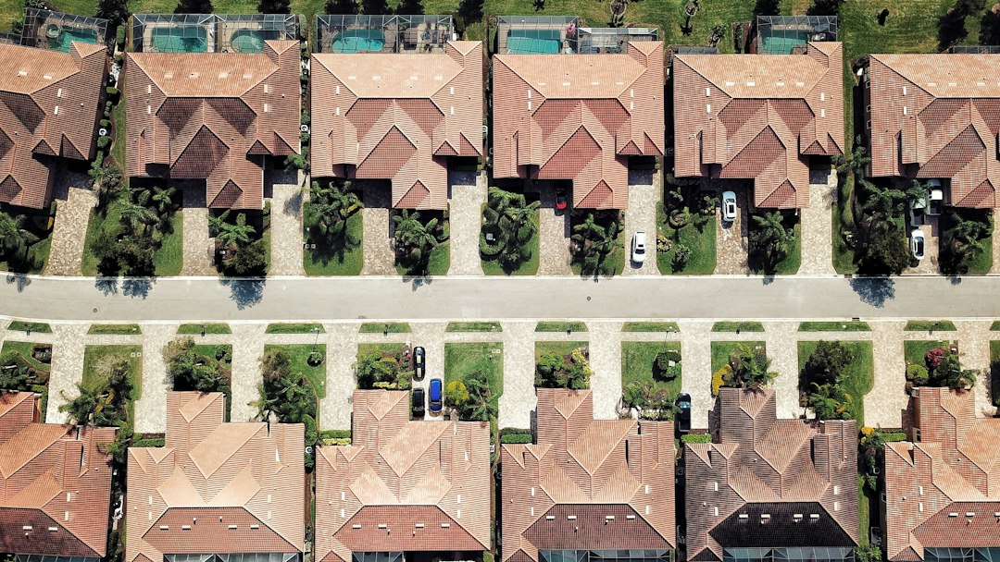

For a Fort Myers roof leak, storm issue or worn roof, the practical first move is a real inspection, then a written scope and price before work starts. The source page says local asphalt shingle replacement is commonly quoted around $4.50 to $8.00 per square foot as a market guide only, with tile and metal higher. It also names repair, replacement, shingle, tile, metal, flat roof, storm tarping and inspection services.
For homeowners comparing roof repair fort myers options, the useful starting point is whether the roof needs targeted work, temporary leak control or a full re-roof after inspection.
Roof Repair Fort Myers Explained
Fort Myers Roofing frames the decision around inspection first, because a leak, missing shingles, cracked tiles or worn flashing can call for repair while an ageing or badly damaged roof may need replacement. That order matters. A quote conversation should begin with what was found on the roof, not with a pre-set preference for a new covering.
The source page describes Southwest Florida conditions that wear roofs down, including relentless sun, summer downpours, salt air near the coast and tropical systems. Those conditions do not prove that every roof is beyond repair, but they do justify careful checking of shingles, tile, flashing, decking, underlayment and ventilation before a homeowner commits money.
What A Repair Scope Should Clarify
A useful repair scope separates visible symptoms from the underlying work. A ceiling stain might point to flashing, a missing shingle, a cracked tile or a low-slope membrane issue. The page identifies targeted repairs for leaks, missing shingles, cracked tiles and worn flashing, so the written scope should name the affected area and the repair method rather than using broad language.
- Ask whether the inspection found damage to the roof covering only, or also to decking, underlayment or ventilation.
- Ask whether temporary tarping is needed before permanent work, especially after storm damage.
- Ask which material is involved, such as asphalt shingle, concrete tile, clay tile, metal panel, TPO, EPDM or modified bitumen.
- Ask when the guide price becomes a firm written estimate.
A related local guide to Fort Myers roof repairs can help readers compare how repair language is used across nearby pages without treating either page as a substitute for an inspection.
Materials Change The Decision
The published service notes point to several roof types in Fort Myers and Lee County. Asphalt shingle is described as the most common local roof, while barrel tile is linked with stucco and Mediterranean-style homes. Metal roofing is presented as standing-seam or metal panel work, and flat or low-slope areas may need membrane systems over additions, lanais and similar sections.
That mix changes the repair conversation. A shingle job may focus on missing shingles, ventilation and storm exposure. Tile work may involve cracked tiles, re-bedding or replacement. A low-slope section should not be treated as if shingles are automatically the right fit. For roof repair fort myers searches, the material is not just cosmetic, it controls what a contractor must inspect and price.
Code, Licensing And Insurance Questions
The source page says Lee County roofing work has to meet Florida Building Code high-wind requirements, and it tells homeowners they can check a licence at MyFloridaLicense.com before work begins. Those are verification steps a reader can take without relying on sales language. Ask for the contractor name and licence details early enough to check them before access, deposit or scheduling decisions.
Insurance can also affect the paper trail. The page describes storm tarping followed by a documented assessment for permanent repair and any homeowner insurance claim. It also notes roof inspections that can support a wind mitigation report for an insurer. Homeowners should ask what photos, findings and written descriptions will be supplied, because vague notes are less useful than a clear account of damage, material and proposed work.
Who This Applies To
This guide is for Fort Myers and Lee County homeowners who have found a fresh leak, noticed storm damage, own an ageing roof or need a pre-sale, post-storm or periodic inspection. It also fits homeowners comparing repair against replacement for shingle, tile, metal and flat or low-slope sections.
It is less useful for readers looking for a guaranteed price without inspection. The page itself says any number discussed early is only a guide until a contractor has walked the roof and put a firm price in writing. Use the early conversation to organise evidence, roof type, access notes and questions, then judge the proposal once the written scope, price and terms are on the table.
- Describe the symptom. Note the leak location, storm timing, visible damage and roof material before asking for help.
- Request an inspection. Ask for the roof to be checked before accepting repair or replacement as the answer.
- Check the licence. Use the contractor details to verify the licence through MyFloridaLicense.com before work begins.
- Compare the written scope. Read the proposed work, price and terms together, because an early figure is only a guide.
| Question | Repair path | Replacement path |
|---|---|---|
| What started the enquiry? | Leak, missing shingles, cracked tiles or worn flashing found on inspection. | Ageing roof, widespread storm damage or roof covering near the end of its life. |
| What should be written down? | Affected area, material, repair method and any temporary tarping. | Tear-off scope, decking, underlayment, covering and code-compliant finish. |
| What price confidence is realistic? | Guide only until the roof has been inspected. | Firm only once the contractor provides a written estimate. |
Common questions
Is repair always enough for a Fort Myers roof leak? No. The source page separates targeted repair from full replacement and says the decision should follow a real inspection. A leak might be flashing, shingles, tile or membrane, but an ageing or storm-damaged roof may need a larger plan.
What roof materials are discussed for local work? The page names asphalt shingle, concrete tile, clay tile, standing-seam metal, metal panel, TPO, EPDM and modified bitumen. It also notes flat and low-slope sections where a membrane system, not shingles, may be the right fit.
Can I treat the square-foot number as a quote? No. The page gives $4.50 to $8.00 per square foot for asphalt shingle replacement as a market guide only. It says a firm written estimate comes after a contractor has inspected the roof.
What should I check before work starts? Ask for licence details and check them at MyFloridaLicense.com. Also ask for the written scope, price and terms before work starts, because the page says those should be put in writing.
This guide covers inspection-led roof repair decisions for Fort Myers and Lee County homeowners comparing repair, replacement, material and quote questions.